Where am I working?
Work, School, Gaming or General.
A TACTILE, PROJECT-CENTRED COMPUTING ENVIRONMENT
We borrow ideas from games, physical controls and the way people organise their work, then bring them into the desktop.
Here is what changes, why it helps, and how you would use it. The examples start with something simple: the app bar.
Work in progress (WIP). This illustrated guide describes an evolving browser prototype. The design and interaction rules may change. Web references show the ideas we borrow; screenshots labelled “Our prototype” show Spatial Desktop.
01 / APP HOTBAR
We borrow the numbered hotbar from games to make switching between applications easy: look at the number, press Win + number, and the app is there.
Windows and KDE Plasma already have shortcuts for apps by their position. The missing piece is showing that position as a number. Once you have more than a few icons, counting them becomes work. A visible number makes the shortcut something you can read instead of something you have to remember.
We put the same number on the app icon and its minimized card. If Dolphin is slot 3, it is slot 3 in both places. Press Win + 3 to open or restore it. If it is already in front, press again to park it. This puts the window away; it does not quit the app.
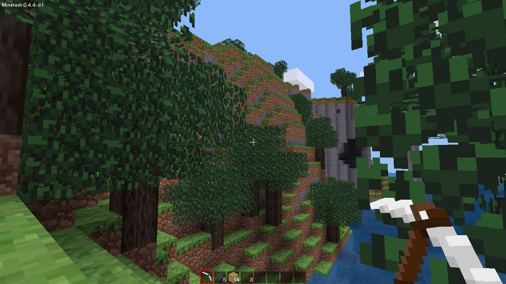
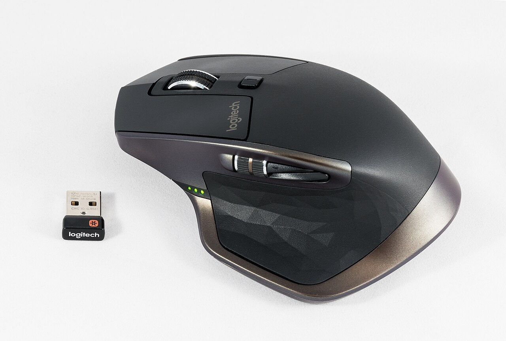
To make this more comfortable, we propose mapping one mouse side button to Super while held. Hold it with your right thumb and press the desired number with your left hand. Your right hand stays on the mouse, ready to use the app you just opened.
You can still use the Windows/Super key normally. Mouse remapping is an optional setup through the operating system or mouse software, not something the web demo configures. The mapping must act as a held modifier, rather than a one-shot “open Start” macro.
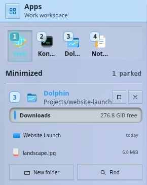
TRY IT
Super + 3 opens or restores slot 3. Press again while it is frontmost to park it.
The browser fallback is Alt + 3. “Win”, “Meta” and “Super” refer to the desktop modifier here.
Numbers are visible from the beginning, so using the mouse also teaches the keyboard shortcut.
Existing shortcuts: Microsoft’s Windows guide and KDE’s account of Meta + 1–9. Input Remapper is one example of Linux input-remapping software; the exact mapping depends on your setup.
02 / USEFUL MINIMIZED APPS
A normal minimized music player becomes an icon. You can tell it is running, but you have to reopen it to skip a song. We keep a small version of the useful part in the Apps Area instead.
A player keeps playback controls. Notes keeps the note. A file manager keeps a few recent files and file actions. These are small interfaces designed for their jobs, rather than scaled-down screenshots of the whole app.
The Dolphin card above shows the idea: the window is out of the way, but Downloads, recent entries, New folder and Find are still available. Click the card’s header or drag it back to restore the full tool. There is no large Restore button occupying most of the card.
The rule is simple: if an app is completely invisible, it should be parked where you can find and use it. Partly visible windows can remain open. A native version would need apps to provide these small interfaces; the demo provides them for its simulated apps.
03 / DESKTOP AREAS
A conventional panel often mixes app icons, a clock, notifications and system controls into one strip. We give these things three clear places: Apps, Project and System.
| Area | What you see | Example |
|---|---|---|
| Apps | Your hotbar and useful minimized apps. | Music controls while you work in another app. |
| Project | The project folder, quick note, linked resources and Modes. | A brief beside the editor and preview. |
| System | Notifications, timers, calendar, devices and system settings. | A meeting reminder above your clock. |
Areas are always docked. Drag their headers to change where they sit and their borders to change how much space they use. They do not float over one another like app windows. Each Area has one header and no footer: identity, Overview, workspace and project actions belong at the top. Neutral seams and different glass tones separate adjacent Areas; rail headers keep their role labels visible.
Make an Area narrow enough and it becomes an on-rail version with its important controls. There is no extra Compact state to learn. Apps and System stay available as rails; Project can be hidden when you do not need it.
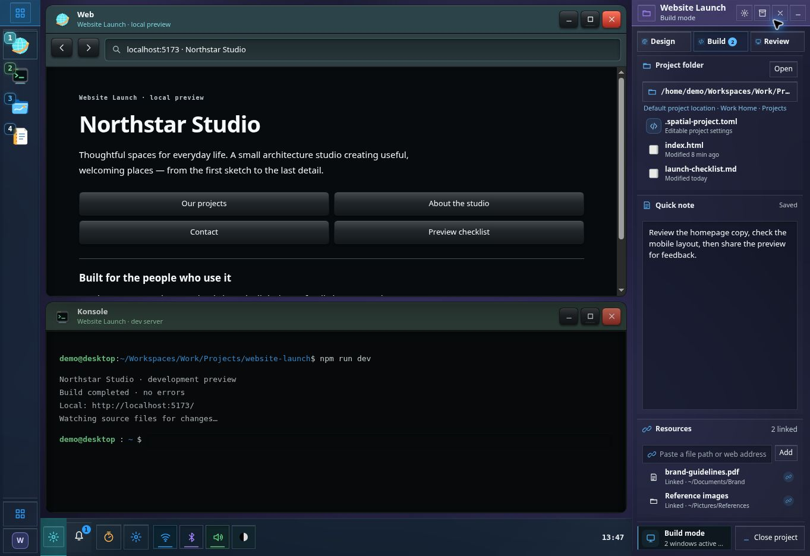
Normal tiling respects the frame you chose. Areas can yield when you explicitly float a window into their space or use true full screen. A resistant boundary makes that deliberate: touching the edge should not immediately rearrange the desktop.
If space has to be shared, the design prioritises Project, then Apps, then System. That is a useful default, not permission to ignore your manual placement.
04 / WORKSPACES
You might want a school calendar and study tools during the day, then friends, music and games in the evening. Rebuilding the same desktop for each context is unnecessary work.
A Workspace remembers its own favourite apps, open windows, Area layout, widgets, clipboard context and current Project. Switching from School to Gaming puts you in the environment you left there. Switching back brings your study setup back.
Work, School, Gaming or General.
A website, short film or assignment.
Building, reviewing or researching it.
A Workspace should almost feel like a different sign-in, with its own Home containing Desktop, Documents, Downloads and Projects. The Workspace folder is that Home. We do not put another Home folder inside it.
You can still access folders from other Workspaces. This separates your working context; it does not create a new security boundary or user account. General is the familiar default: open an app and get on with it, without creating a Project first.
There is no additional virtual-desktop layer. If you previously used separate desktops for work and gaming, use Workspaces. If you used them for different stages of one project, use that Project’s Modes.
05 / PROJECTS
A folder holds files, but a piece of work also has a brief, references, notes and tools. A Project puts those things beside the folder so you can return to the work without reconstructing its context.
Create one in any folder. The active Workspace’s Projects folder is simply the default. A film stored on another drive is just as valid as a website stored in Work.
You can also associate resources from elsewhere. Link a reference video without moving it into the project folder. The Project Area should show that it is a link and tell you if the original is missing.
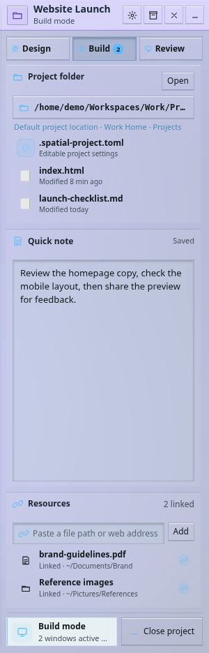
EXAMPLE · WEBSITE LAUNCH
The folder contains the site and its launch checklist. The quick note says what to check next. Brand guidelines and reference images can stay in their original locations.
Open the Project from the Overview. Close it when you are done and keep its tool arrangement saved for later.
A Project can be opened from any Workspace. It only appears as open in the Workspaces where you actually opened it.
This keeps Project separate from Workspace. Website Launch is one piece of work; Work is the broader environment in which you happen to be doing it.
06 / PROJECT MODES
Modeling and texturing use the same files but different tools and arrangements. They should not require two copies of the Project.
We save each way of working as a Mode inside the Project. A short film might have Edit, Sound and Review. A website might have Design, Build and Review. Switching Mode recalls the windows for that activity while keeping the Project’s files and resources together.
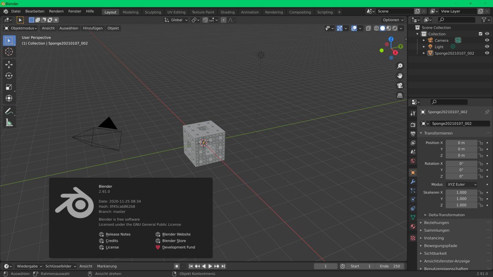
We borrow the idea of a saved working layout from tools such as Blender and extend it across applications. A Mode is an arrangement, not a task list. “Finish the textures” is a task; “Texturing” is the setup you use to do it.
Only one Project is active in the current context, but it can have several Modes. If there is only one, we hide the switcher. The extra control appears when there is a real choice.
07 / WINDOW PLACEMENT
Most of the time you want the new app to fit, rather than to spend the next minute moving windows. We open it at a useful size and tile it into the available space between Areas.
Tiles can split again as more tools open. This draws on the recursive arrangement explored by Trellis, but there is no zooming canvas. When an app no longer has enough usable space, it parks in Apps instead of being crushed into a tiny tile.
Drag a title bar to place the window beside another tile, or into Apps to park it. The Area frame stays put.
Detach the window and float it where you want. Areas can yield after you push through their boundary.
The first manual grab gives a tiled app a sensible floating size. You should not have to drag a very long, narrow tile around. Later grabs keep the size you chose. A subtle lit rim helps distinguish a float from a tile.
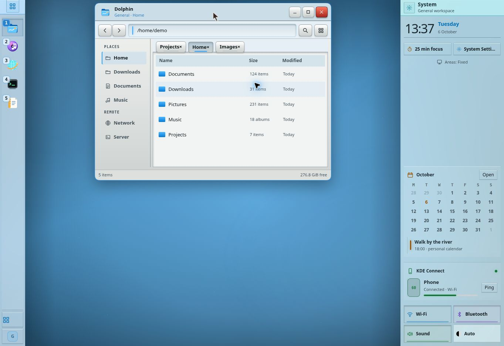
Floating windows still count as occupied space. New apps and existing tiles try to fit around them. If there is no usable clear rectangle, a tile parks rather than opening underneath the float. A normal left drag puts the float back into tiling.
Left-click maximise to fill the space between Areas. Middle-click it to use the whole screen. Repeat the action to return to the previous arrangement.
In true full screen, Areas move to another monitor if there is room. Otherwise they temporarily hide completely. Other windows that become completely invisible park in Apps; ending full screen restores the previous arrangement.
08 / OVERVIEW
Press Super and you should see the important things immediately: Workspaces, Projects, apps, open windows and useful system information. You should not have to type a search or click through tabs just to find out what is happening.
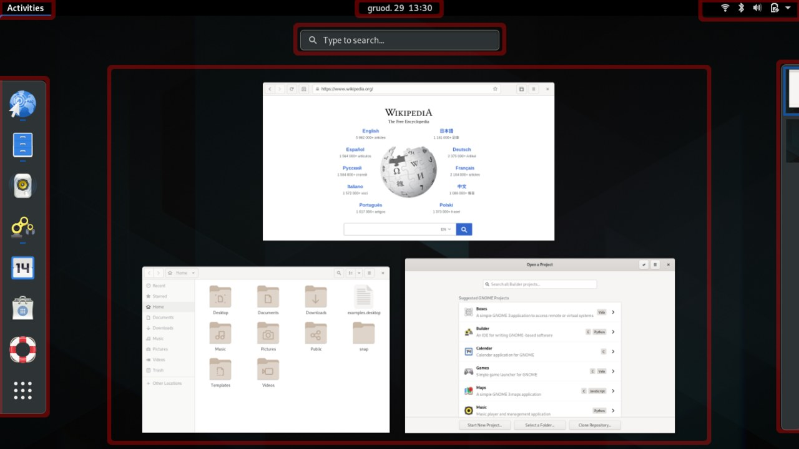
We take the single-entry-point idea and organise its content into vertical columns that match the desktop’s Areas. Projects and Home sit together, apps form a catalogue, and System information stays visible alongside them.
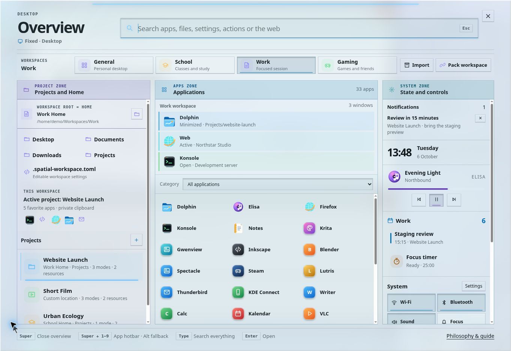
Typing searches this same surface. The intended shell would include files, web results and system actions; the demo uses example data. Full-colour app icons help you recognise tools, while symbolic icons are reserved for small commands.
We removed a separate desktop thumbnail. The translucent sheet already leaves the desktop present behind it; another preview would use space without adding much information.
09 / PLASTIC & ACRYLIC
When you click a mouse button, a shallow plastic shell moves under your finger. We want the on-screen control to feel connected to that action: a quick press, a small change in depth, then a clear result.
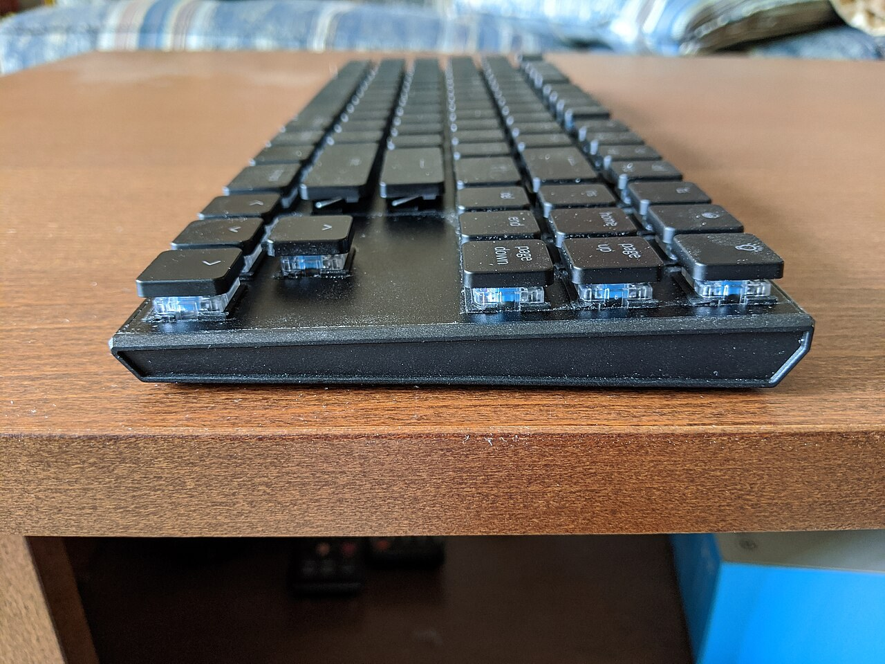
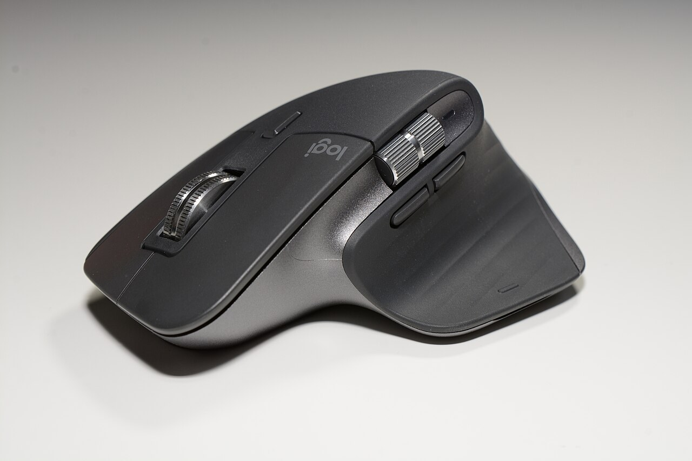
Application windows use ABS plastic as their visual model: solid, matte, gently shaped and dependable. Their main content always has an opaque background. A document, file list or note needs a stable reading surface.
Areas use edge-lit, engraved acrylic: transparent enough to keep the environment present, with blur and contrast that let you read the contents. They are one continuous sheet, not a stack of glass capsules.
Squircle window, opaque content, shallow pressable controls. Neutral reflections reveal the surface.
Square Area, fine boundary, readable engraved controls. Local light reveals state in the shared sheet.
Controls match their host: glass on glass, plastic on plastic. An app can have a small glass display section, but the transition should be intentional. Areas, their content and the Overview stay square. App shells use squircles; their reading surfaces must not acquire awkward rounded bites from nested containers.
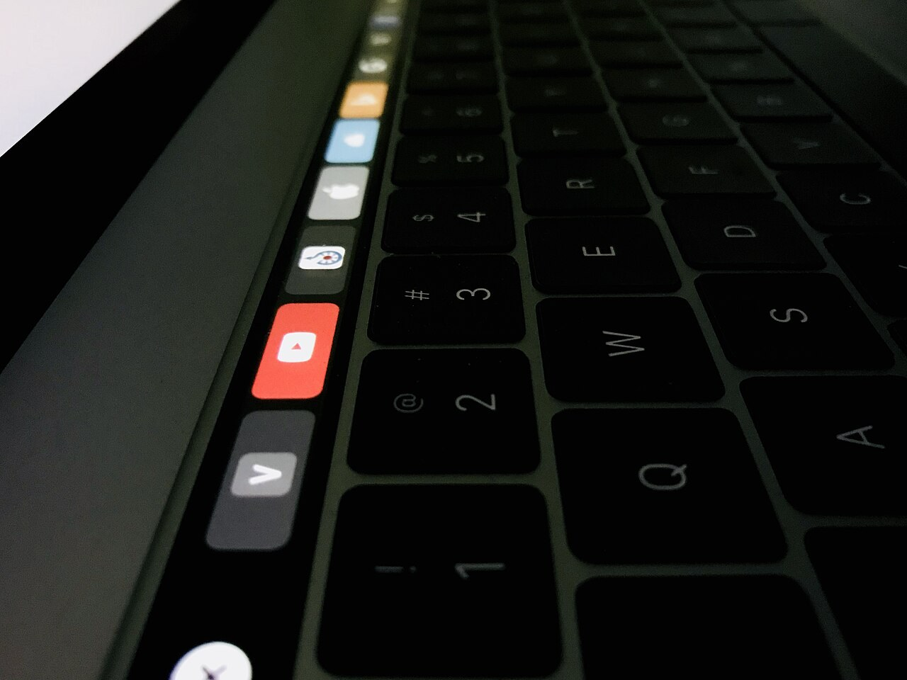
The goal is useful physical cues, not maximum realism. Thin borders, flat information rows and fewer nested containers leave room for the content. On phones, where the finger touches a continuous screen, the related experiment favours glass contact rather than mechanical button travel.
10 / LIGHT & BUTTONS
A push button performs an action and returns. A toggle stays on. We make that difference visible before you click: toggles have a permanent indicator line; ordinary push buttons do not.
When a toggle is off, its line is quiet but still visible. When it is on, the line lights up. Both types press and release as quickly as a mouse click. Staying on must not mean having a slower animation.
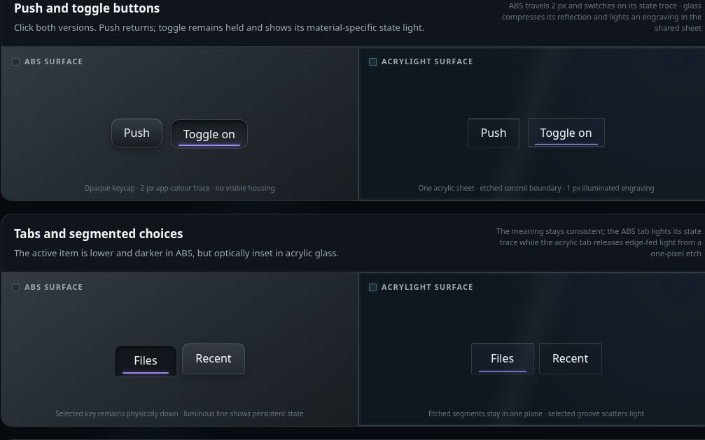
| Element | ABS: a local LED | Acrylic: an illuminated engraving |
|---|---|---|
| Push button | Fast down/up, shallow shadow. No permanent state line. | Fast local reflection change. No permanent state line. |
| Toggle or selected tab | The control stays lower; a flush coloured trace shows the state. | The selected engraving catches edge-fed light in the sheet. |
| Slider | The same LED-like trace fills exactly to the thumb. | The completed part of a frosted groove catches light. |
| Text field | A modest inset receives text; a small focus slit marks entry. | An engraved inset and local focus edge mark entry. |
For ABS, think of a little indicator built into the shell. The surrounding plastic does not emit light, and the indicator does not need a black housing around it.
For acrylic, think of light entering the cut edge and becoming visible at an etched or frosted mark. The clear face stays quiet. We do not light up the whole perimeter simply because the panel is glass.
The slider uses the same light as the active button, rather than a different neon effect. Its lit length follows the thumb without a trailing animation. Contact feedback follows the actual pointer or touch position, instead of placing a blue halo in the middle of every control.
Try both materials side by side, including sliders, fields, tabs and menus.
11 / COLOUR & READABILITY
An app has a primary colour. You see it in the window header, its hotbar identity, minimized card, selected controls and relevant progress. This lets you follow the same tool as it changes size or place.
Developers can carry that colour into useful tints inside the app. It should feel coherent, not like a title bar with an unrelated fade. Warning and error colours still take precedence when their meaning matters more.
Workspaces colour the environment; Areas have a slight tint and clearer header colour. Labels, shape and icons also distinguish them. Colour should help recognition without being the only clue.
Light, dark and OLED versions all need readable text. Auto follows the system appearance. Blur cannot fix low contrast, and transparency cannot replace an opaque working surface.
We remove redundant icon frames and oversized padding before shrinking text. Information rows stay flat unless they really are controls. Scrollable Area content fills the space below its header and never passes behind it. The cursor keeps a familiar shape, a visible border and restrained press cues.
12 / NOTIFICATIONS
If the System Area is expanded, a new notification already has a place on screen. Showing another popup repeats the message and covers the work.
Instead, a small light travels around the new notification’s boundary for long enough to notice. It points to the message where it lives. It should not flash the entire desktop or turn every old notification into a glowing card.
If System is on a rail, show a discreet preview near it. If true full screen has hidden it, a popup can provide access. Reduced motion should retain a clear static new-message cue.
Dynamic information belongs near the top: a new notification or active timer appears when relevant. The clock, calendar and persistent controls stay nearer the bottom. You should not have to reserve a large empty timer card when no timer is running.
Shortcuts can be taught in the same quiet way: show the number beside an app and the shortcut beside the command you are using. The interface becomes a reference you learn through use.
13 / DIFFERENT SCREENS
On a laptop, the Areas can use rails while the current tools share the centre. On an ultrawide, the same Areas can become full columns without stretching a document into a very long line.
With two monitors, keep Areas on the main one while there is room. If a full-screen tool needs that monitor, move Areas to the other one only when it has enough free space. Do not treat a second screen as empty merely because it exists.
When full screen ends, release the temporary move. The desktop remembers your chosen layout in each Workspace, and recomputes free space from that Workspace’s windows.
The demo can simulate an extended desktop with two pages in the same browser profile, one on each monitor. They share state but show different placements. This does not connect different browsers or replace native monitor management.
14 / FILES & SHARING
A Project should not depend on an invisible entry in one machine’s desktop database. Its settings live with its folder, in an editable .spatial-project.toml file. A Workspace uses .spatial-workspace.toml in its Home folder.
The files can be hidden by default but remain ordinary files you can inspect and edit. This makes the relationship between the folder and its desktop setup understandable.
| Location | What belongs there |
|---|---|
/home/demo/Workspaces/Work/ | The Work Home itself: Desktop, Documents, Downloads, Projects and .spatial-workspace.toml. No extra nested Home. |
…/Work/Projects/website-launch/ | Project files and .spatial-project.toml. |
/mnt/media/Projects/short-film/ | An equally valid Project at a custom location. |
/mnt/videos/reference.mp4 | A linked resource. Association does not move the file. |
Packaging lets you share a setup as a template, a selected portable copy, or a handoff snapshot. Choose whether an external resource travels with it or stays a link. Import should explain missing resources and unavailable apps.
Account credentials and private history do not belong in a package by default. A saved arrangement also cannot promise to transfer every running process. Clipboard scope and what is included must be clear.
This is the intended storage and sharing model. The current web page illustrates it with folders and packaging dialogs; it does not create these files or replace the operating system’s clipboard.
15 / A WORKING EXAMPLE
Your favourite tools, Home, widgets and Area positions return. Gaming keeps its own setup.
The Project brings its folder, quick note and linked brand references together.
The browser preview and terminal tile into the available space. Park tools you do not need in front.
Recall the testing arrangement for the same files. You have changed the way you work, not made another Project.
Close the Project with its arrangement saved, or switch Workspace. Reopen it later instead of reconstructing the setup.
The model should also work without this organisation. In General, opening one browser is enough. Projects and Modes become useful when there is context worth saving.
16 / WHAT CHANGED
We arrived here by trying things, then removing the parts that got in the way.
Tall keycap sides and deep wells used too much space. We kept a shallow press, fine seams and the solid reading surface.
Thick rims and large electric effects competed with the content. We kept transparent context and small state marks.
Compact became an unnecessary middle state. Expanded and on-rail give clearer choices through the same resize gesture.
Always-moving Areas and always-retiled windows made one another move. Ordinary tiling now respects the frame; a manual gesture explicitly borrows space.
Separate app search and repeated previews hid useful information. We kept one entry point with the important things already visible.
One model could not explain personal context, project resources and tool arrangements clearly. Each now answers a different question.
These are prototype decisions, not measured usability findings. The next test is whether someone who did not help invent the desktop can understand and use them.
17 / CONTROLS
| Action | Control | Result |
|---|---|---|
| Open the Overview | Super or the square Overview control | Apps, Workspaces, Projects and system context. Type to search. |
| Browser fallback | Alt + Space or Ctrl + Space | Toggle the Overview when the OS intercepts Super. |
| Hotbar app | Super + 1–9; demo fallback Alt + 1–9 | Open/restore a closed or parked app, or focus an open one. Press its number again while it is frontmost to park it, not quit it. |
| Arrange a tile | Left-drag its title bar | Drop beside another tile or into Apps. |
| Float manually | Held wheel or Alt + left-drag on its title bar | Place a floating window; Areas can yield after boundary resistance. |
| Return a float to tiling | Normal left title-bar drag; or its context menu | Reinsert it into the tiled arrangement. |
| Resize a tile | Drag a divider or the window resize handle | Redistribute bounded space; squeezed neighbours can park in Apps. |
| Grow/shrink a tile | Alt + wheel over its title bar | Adjust its share of the tiled layout. |
| Maximise between Areas | Left-click maximise or double-click title bar | Focus the app while retaining the Area frame; repeat to restore. |
| True full screen | Middle-click maximise | Fill the demo viewport and allow temporary Area relocation; repeat to restore. |
| Resize an Area to a rail | Drag its border handle inward | Expanded content becomes a useful narrow rail. |
| Move an Area | Drag its Area header | Change docked placement, not a floating panel layer. |
| Find contextual actions | Right-click an app, Area, resource or desktop | A square translucent context menu. |
| Open/manage Projects | Project entries in the Overview | Create/remove a Project or manage Modes. Removing it does not delete its folder. |
| Leave an overlay | Escape | Dismiss the relevant overview/dialog; full screen also has an Escape path. |
Operating-system and browser shortcuts can take precedence over the page. The visible controls and fallback shortcuts exist so the model remains testable. If a gesture is interrupted or the browser loses focus, the drag state and custom cursor should be released rather than leaving the window unusable.
18 / PROTOTYPE STATUS
The design, interactions and this guide are being developed together. Some behaviour is experimental or incomplete; the current demo shows the direction rather than a finished desktop.
You can try simulated app launching, tiling, floating, useful minimized cards, Area placement, Workspaces, Projects, Modes, the Overview and extended-display behaviour.
Real installed apps, filesystem indexing, separate native clipboards, device integrations and portable session transfer still need operating-system integration. The browser stores prototype state locally; some actions illustrate a result rather than performing a native operation.
The important questions are practical: can people recognise the three context levels, predict when a window will park, use a rail comfortably, and recover from a layout change? The material language must also remain readable with keyboard access, reduced motion and high-contrast needs.
Try it with a piece of work you know.
Open Spatial DesktopWeb reference images are bundled locally, with their source and licence beside each picture. All were resized and converted to JPEG, with no content changes. The licences listed apply to those images; the surrounding text is our design explanation.
Spatial Desktop screenshots come from this prototype. Download reference image metadata.